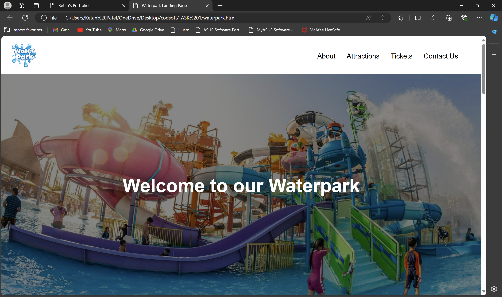
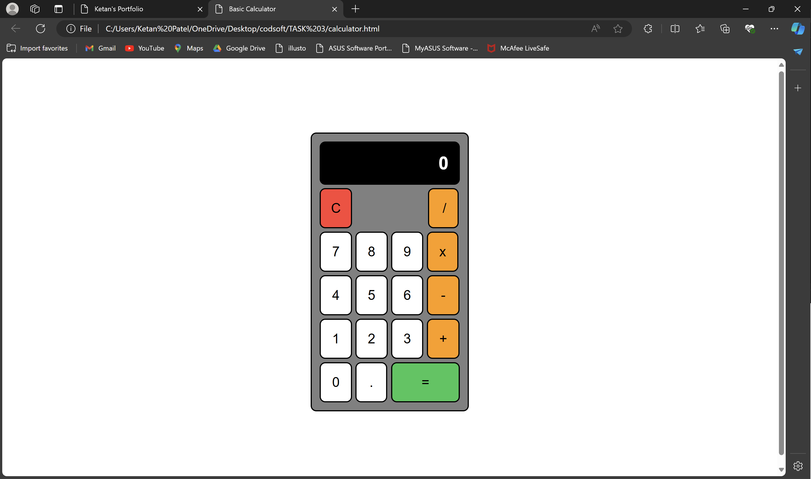
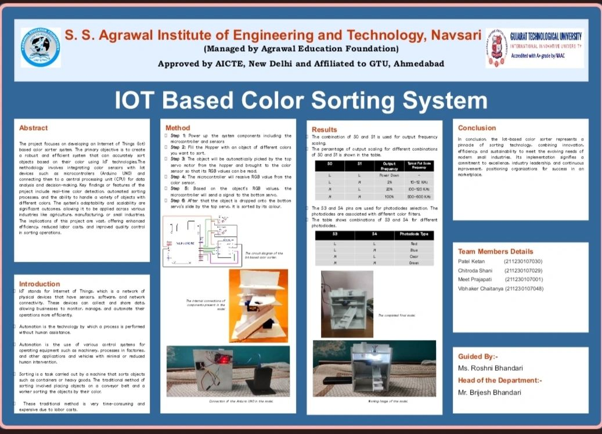

Waterpark Landing page
A vibrant HTML and CSS waterpark webpage featuring a splashy header, fun animations, interactive buttons, and colorful sections for attractions, ticket prices, and visitor reviews. It combines bright visuals with fluid design for an engaging, user-friendly experience.
|

Web Calculator
A sleek HTML, CSS, and JavaScript web calculator featuring a clean interface, responsive design. It supports basic arithmetic operations, keyboard input, and displays real-time results, providing an intuitive and efficient user experience for quick calculations.
|

IoT Color Sorter
An IoT-based color sorter using sensors and actuators to detect and classify objects by color. It features real-time monitoring, automated sorting, and remote control via a web interface, enhancing efficiency and precision in industrial and agricultural applications.
|